무선설비산업기사 (2005-05-29 기출문제)
1과목: 디지털 전자회로
1. 다음과 같은 NOR GATE로 구성된 기본적인 플립-플롭회로에서 S=1, R=0 인 상태일 때 Q, Q'의 상태는?
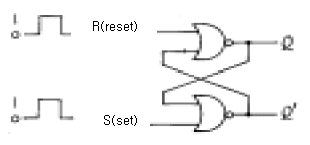
- 1, 0
- 0, 1
- 0, 0
- 1, 1
(정답률: 60%)

2. 다음 회로에서 Re의 값과 관계가 없는 사항은? (단, 출력전압 및 전류는 콜렉터측임)
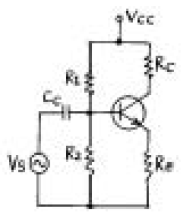
- Re가 크면 클수록 입력 임피이던스는 커진다.
- Re가 크면 클수록 안정계수 S는 적어진다.
- Re가 크면 클수록 증폭된 콜렉터 전류는 적어진다.
- Re가 크면 클수록 전압증폭도는 커진다.
(정답률: 알수없음)
3. 다음 카아르노프도의 간략식은?
- Y = A
- Y = B
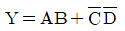
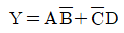
(정답률: 알수없음)
4. 미분회로에 삼각파를 입력했을 때 출력파형은?
- 정현파
- 여현파
- 삼각파
- 구형파
(정답률: 알수없음)
5. 변조도 60[%]인 진폭변조 회로에서 반송파의 평균출력이 300[㎽]일 때 피변조파의 평균 출력은?
- 180[㎽]
- 300[㎽]
- 354[㎽]
- 420[㎽]
(정답률: 알수없음)
6. 연산 증폭기(OP Amp)의 특징으로서 맞는 것은?
- 전압 이득이 적다.
- 입력 임피던스가 낮다.
- 출력 임피던스가 높다.
- 주파수대역이 크다.
(정답률: 알수없음)
7. 그림과 같은 회로의 명칭은?
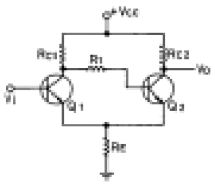
- 슈미트트리거회로
- 차동증폭회로
- 푸슈풀증폭회로
- 부트스트랩회로
(정답률: 알수없음)
8. 쌍안정 멀티바이브레이터의 결합저항에 병렬로 부가한 콘덴서의 사용 목적은?
- 증폭도를 높인다.
- 스위칭 속도를 높인다.
- 베이스 전위를 일정하게 유지시킨다.
- 에미터 전위를 일정하게 유지시킨다.
(정답률: 알수없음)
9. 다음에 열거한 인터페이스의 종류 중에서 회선의 개수가 많지만 속도가 가장 빠른 인터페이스는?
- SISO
- SIPO
- PISO
- PIPO
(정답률: 50%)
10. 다음 중 레지스터(register)의 기능은?
- 펄스(pulse) 발생기이다.
- 카운터의 대용으로 쓰인다.
- 회로를 동기시킨다.
- 데이터(data)를 일시 저장한다.
(정답률: 알수없음)
11. 그림과 같은 게이트 회로의 명칭은?
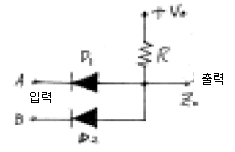
- NOR 회로
- AND 회로
- OR 회로
- NAND 회로
(정답률: 알수없음)
12. FET를 사용한 이상(phase shift) CR발진기에서 발진을 지속하기 위해 FET의 증폭도는 최소 얼마 이상이어야 하는가 ?
- 10
- 29
- 100
- 156
(정답률: 40%)
13. RC결합 저주파 증폭회로의 이득이 낮은 주파수에서 감소되는 이유는?
- 출력회로의 병렬 캐패시턴스 때문
- 에미터 저항 때문
- 콜렉터 저항 때문
- 결합 캐패시턴스의 영향 때문
(정답률: 알수없음)
14. 시간폭과 진폭이 일정한 펄스의 시간적 위치를 신호파의 파형에 대응하여 변화시키는 펄스 변조방식은?
- PAM
- PPM
- PCM
- PNM
(정답률: 80%)
15. 회로내의 분포용량, 표유 인덕턴스 또는 회로 정수의 불평형에 의하여 증폭하려는 주파수와 다른 주파수간에 발진이 생기는 현상은?
- 자기 발진
- 이완 발진
- 다이나트론 발진
- 기생 발진
(정답률: 알수없음)
16.
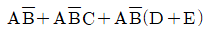
를 간단히 하면 ?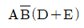
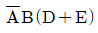
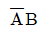
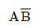
(정답률: 알수없음)
17. 그림과 같은 회로에서 입력임피던스의 근사값은? (단, 입력임피던스는 TR의 베이스와 접지간을 의미하며, TR의 hie = 1[㏀], hfe = 50 이다.)
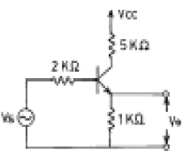
- 52[㏀]
- 62[㏀]
- 82[㏀]
- 100[㏀]
(정답률: 알수없음)
18. 제너 다이오드를 주로 사용하는 회로는?
- 증폭회로
- 검파회로
- 전압안정회로
- 저주파발진회로
(정답률: 알수없음)
19. 다음 회로의 출력전압은 얼마인가?
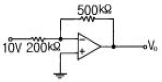
- -5[V]
- -10[V]
- -15[V]
- -25[V]
(정답률: 알수없음)
20. 반가산기(Half-adder)의 구성 요소로 맞는 것은?
- JK 플립플롭
- 두개의 AND 게이트
- EOR과 AND 게이트
- 1개의 반동시 회로와 OR 게이트
(정답률: 알수없음)
2과목: 무선통신 기기
21. 정현파의 최대전압이 100[V]이면 단상 전파정류를 했을 때 평균치는 얼마인가?
- 32.6V
- 63.6V
- 71.6V
- 90.6V
(정답률: 알수없음)
22. 수정 발진자의 발진주파수 범위 및 안정도에 대하여 옳은 것은? (단, 직렬공진 주파수 : fs, 병렬 공진 주파수 : fp )
- fs＜f＜fp이며 좁을수록 안정도가 좋다.
- fs＜f＜fp이며 넓을수록 안정도가 좋다.
- fp＜f＜fs이며 좁을수록 안정도가 좋다.
- fp＜f＜fs이며 넓을수록 안정도가 좋다.
(정답률: 알수없음)
23. 다음 중 변조의 필요성에 해당되지 않은 것은?
- 전송채널에서 간섭과 잡음을 줄이기 위함이다.
- 다중통신을 하기 위함이다.
- 원거리 통신을 하기 위함이다.
- 좀더 긴 파장의 신호를 만들기 위함이다.
(정답률: 알수없음)
24. 송신시스템에서 발생하는 스프리어스(Spurious)의 발생 원인과 거리가 먼 것은?
- push pull 증폭기
- 주파수체배
- 상호변조
- 증폭기의 비직선성
(정답률: 알수없음)
25. 슈우퍼헤테로다인 수신기에서 수신신호파가 800 [KHz] 국부발진 주파수가 1255[KHz]이라면 영상주파수는?
- 455[KHz]
- 1427[KHz]
- 1710[KHz]
- 3310[KHz]
(정답률: 알수없음)
26. 오실로스코프로 변조도를 측정한 결과 파형이 그림과 같다고 한다. 이때 변조도는?
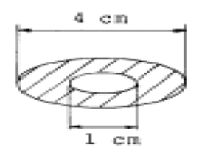
- 50 %
- 60 %
- 70 %
- 80 %
(정답률: 알수없음)
27. 다음 중 위성의 수명과 관계 없는 것은?
- 트랜스폰더의 잔존확률
- 탑재연료
- 주파수 자원의 한정
- 태양전지의 성능
(정답률: 알수없음)
28. FS 다중 통신 방식의 종류에 해당되지 않는 것은?
- 2주파 다이프렉스 방식
- 시분할 다중 전신방식
- 4주파 다이프렉스 방식
- 주파수 분할 다중 전신방식
(정답률: 알수없음)
29. FM 수신기의 주파수 변별기의 특성을 측정하는 방법은 어느 것인가?
- 입력 전압의 변화에 대한 직류 출력 전압의 변화
- 입력 주파수 변화에 대한 직류 출력 전압의 변화
- 입력 전압의 변화에 대한 출력 주파수의 변화
- 입력 주파수 변화에 대한 출력 주파수의 변화
(정답률: 알수없음)
30. 슈퍼헤테로다인 수신기의 특징 중 장점이 아닌 것은?
- 이득을 크게 할 수 있다.
- 전파형식에 따라 통과 대역폭을 변화시킬 수 있다.
- 비트 방해를 받는 일이 있다.
- 단일 조정을 할 수 있다.
(정답률: 알수없음)
31. 인버터(inverter)에 대한 설명으로 맞는 것은?
- 직류전원을 다른 크기의 직류전원으로 변환하는 장치
- 직류전압을 일정한 주파수의 교류전압으로 변환하는 장치
- 교류전압을 직류전압으로 변환하는 장치
- 교류전압을 다른 주파수와 크기를 갖는 교류전압으로 변환하는 장치
(정답률: 알수없음)
32. SSG(Standard Signal Generator)의 출력전압 100[㎶]를 [㏈]로 표시하면 몇[㏈]인가? (단, 기준전압은 1[㎶])
- 400[㏈]
- 80[㏈]
- 40[㏈]
- 20[㏈]
(정답률: 알수없음)
33. 저주파 증폭기의 출력측에서 기본파의 전압이 50[V] 제2 고조파의 전압이 4[V] 제 3고조파의 전압이 3[V]임을 측정으로 알았다면 이 때의 왜율은?
- 5[%]
- 10[%]
- 15[%]
- 20[%]
(정답률: 알수없음)
34. FM수신기에서 주파수 변별기의 주파수편이에 따른 출력전압의 변화특성을 보인 그림이다. 동조가 벗어난 경우에 나타나는 특성은?
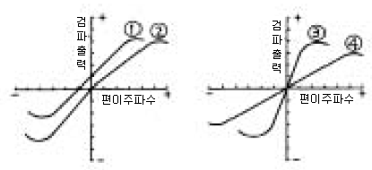
- 림
- 립
- 릿
- 링
(정답률: 알수없음)
35. 무선 송신기에서 일반적으로 사용하지 않는 회로는?
- 주파수 체배회로
- 고출력 증폭회로
- 변조회로
- AGC 회로
(정답률: 알수없음)
36. 동일한 CDMA주파수를 사용하는 동일 기지국내 섹터간 핸드오프에 해당되는 것은?
- 중간(middle) 핸드오프
- 소프터(softer) 핸드오프
- 하드(hard) 핸드오프
- CDMA- 아날로그 핸드오프
(정답률: 알수없음)
37. 다음은 Superheterodyne 수신기의 구성 요소이다. 어떤 순서로 구성해야 하는가? ( A. 중간 주파 증폭부, B. 고주파 증폭부, C. 저주파 증폭부, D. 주파수 변환부, E. 검파부, F. 안테나)
- F-B-A-E-D-C
- F-B-D-E-A-C
- F-B-D-A-E-C
- B-E-F-A-D-C
(정답률: 알수없음)
38. FM 통신기기에서 사용되는 다음 회로에 대한 설명 중 틀린 것은?
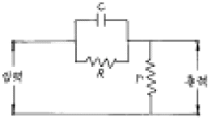
- 입력파형의 고역주파수에 대한 출력전압을 강화한다.
- pre - emphasis 회로의 일종이다.
- FM 송신기에 사용되는 회로이다.
- 적분회로의 일종이다.
(정답률: 알수없음)
39. SSB 송신방식은 DSB 에 비하여 더욱 소형화되었다. 다음 특징 중 가장 타당한 이유에 해당되는 것은?
- 점유주파수 대폭이 증가되었다.
- 비화성을 유지할 수 있다.
- 적은 송신전력으로 양질의 통신이 가능하다.
- 선택성 패이딩의 영향이 적다.
(정답률: 알수없음)
40. FM수신기에 사용된 리미터의 용도는?
- 기생 진동을 방지하기 위해서
- 충격성 잡음을 방지하기 위해서
- 전원 전압의 변동을 방지하기 위해서
- 고조파에 의한 찌그러짐을 방지하기 위해서
(정답률: 알수없음)
3과목: 안테나 개론
41. 전리층 형성의 영향이 가장 큰 것은?
- 우주선
- 번개
- 적외선
- 자외선
(정답률: 알수없음)
42. 자유공간의 단위 면적당 단위시간에 통과하는 전자파 에너지가 3[μW/m2] 이었다. 이때 이 자유공간의 전계 강도는 얼마인가?
- 8.45[m V/m]
- 16.81[m V/m]
- 33.63[m V/m]
- 45.65[m V/m]
(정답률: 알수없음)
43. 초단파 통신에 이용되는 RF 주파수가 6[GHz]인 전파의 파장은? (단, 전송로는 진공상태로 본다)
- 0.⑤ [㎝]
- 0.1 [㎝]
- 5 [㎝]
- 25 [㎝]
(정답률: 알수없음)
44. 정관형 안테나의 정관에 관한 설명 중 틀린 것은?
- 고유주파수가 저하된다.
- 실효고가 증가한다.
- 복사저항이 증가하여 복사효율이 감소한다.
- 고각도 방사가 적고 수평이득이 크다.
(정답률: 알수없음)
45. 다음 Microwave 안테나에서 가장 대역폭이 넓은 안테나는?
- 파라보라(Parabola)안테나
- 경로장(path length)안테나
- 혼 리프렉터(horn reflector)안테나
- 금속(metal plate lens)안테나
(정답률: 알수없음)
46. 빔 안테나(Beam Antenna) 소자의 총수를 N, 복사저항을 R1, 표준 더블렛 안테나(doublet Antenna)의 복사저항을 R2라 하면 이득은?
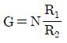
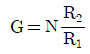
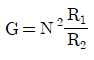
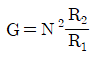
(정답률: 알수없음)
47. 단파의 무선전화 통신에서 페이딩(fading)의 영향을 경감시키는 방법 중 거리가 먼 것은?
- 수신기내에 AGC회로를 장치한다.
- 주파수 합성 수신법을 이용한다.
- 공간 합성 수신법을 이용한다.
- 비접지 안테나를 이용한다.
(정답률: 알수없음)
48. 송신안테나(반파장 안테나)로부터 수신점의 전계강도는?
- 거리의 3승에 반비례한다.
- 거리의 제곱에 반비례한다.
- 거리에 반비례한다.
- 거리의 평방근에 반비례한다.
(정답률: 20%)
49. 비동조급전에 대한 설명 중 옳은 것은?
- 송신기와 안테나 사이의 거리가 가까울수록 많이 사용한다.
- 급전선의 길이는 사용파장과 특별한 관계가 없으므로 충분히 길게 할 수 있다.
- 임피던스 정합장치를 사용하지 않으므로 정재파가 급전된다.
- 전송효율이 나쁜 것이 단점이다.
(정답률: 47%)
50. 선로의 특성 임피던스가 1800[Ω]인 고주파 전송선로와 임피던스 50[Ω]인 안테나 사이에 ∴/4 변성기를 삽입하여 정합이 되었다. 이때 ∴/4 변성기의 특성임피던스는 몇 [Ω]인 가?
- 75 [Ω]
- 150 [Ω]
- 200 [Ω]
- 300 [Ω]
(정답률: 알수없음)
51. 급전점 임피던스를 높여 정합회로를 쓰지 않고도 평행2선식 급전선에 직접 연결할 수 있도록 만들어진 초단파 안테나는?
- 접힌 다이폴 안테나(folded dipole antenna)
- 반파장 다이폴 안테나
- 루프 안테나
- 카세그린(Cassegrain) 안테나
(정답률: 알수없음)
52. 파라보라 안테나(parabola antenna)의 1차 복사기로 사용되지 않는 것은?
- 원주형 혼(horn)
- ∴/2 다이폴(dipole)
- 슬롯(slot) 안테나
- 전파렌즈(Lens)
(정답률: 70%)
53. 길이 10[m]인 수직 접지 안테나의 고유파장과 고유주파수는 얼마인가?
- 20 [m], 3.5 [MHz]
- 40 [m], 7.5 [MHz]
- 20 [m], 7.5 [GHz]
- 40 [m], 3.5 [GHz]
(정답률: 알수없음)
54. 등방성 안테나의 입력전력을 Po 라고 한다면 안테나에서 r(m) 되는 점의 전계강도 Eo는 얼마인가?
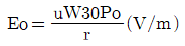
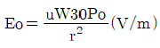
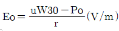
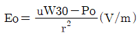
(정답률: 알수없음)
55. 공중선의 단축 콘덴서에 대한 설명과 관계 있는 것은?
- 공중선의 실효길이를 증가시킨다.
- 공중선에 병렬로 적당한 콘덴서를 삽입한다.
- 공중선의 고유파장이 전파의 파장보다 짧을 때 사용한다.
- 공중선을 고유파장보다 짧은 파장에 공진시키고자 할 때 사용한다.
(정답률: 알수없음)
56. 다음 중 전리층을 이용한 단파통신에서 최적주파수(FOT)의 설명으로 맞는 것은?
- 전리층 반사주파수 중에서 가장 낮은 주파수
- 전리층 반사주파수 중에서 가장 높은 주파수
- 전리층에서 반사되어 통신 가능한 가장 낮은 주파수의 85%에 해당하는 주파수
- 전리층에서 반사되어 통신 가능한 가장 높은 주파수의 85%에 해당하는 주파수
(정답률: 알수없음)
57. 마이크로웨이브(microwave) 통신의 장점이 아닌 것은?
- 광대역 통신이 가능하며 사용주파수의 범위가 넓다.
- 외부잡음의 영향이 적고 PTP(point to point)통신이 가능하다.
- 전리층을 통과하여 전파하며 중계기 없이도 원거리 통신이 가능하다.
- 예민한 지향성과 고이득을 가진 안테나를 소형으로 만들 수 있다.
(정답률: 알수없음)
58. TE11 모드(mode)의 원형도파관의 차단 파장은? (단, r : 도파관의 반경, μ : 모드의 치수로 결정되는 상수)
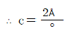
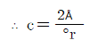
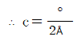
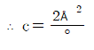
(정답률: 알수없음)
59. 그림과 같은 반파장 안테나에서 급전선의 최소길이 ℓ은 얼마인가? (단, 파장은 40[m], 병렬공진 전압급전방식이다.)
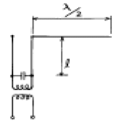
- 10[m]
- 20[m]
- 30[m]
- 40[m]
(정답률: 알수없음)
60. 1/4 파장의 수직접지 안테나에서 20[㎞]떨어진 점의 전계 강도가 10[mV/m]이었다. 복사 전력은 약 얼마인가 ?
- 400[W]
- 800[W]
- 1120[W]
- 1200[W]
(정답률: 알수없음)
4과목: 전자계산기 일반 및 무선설비기준
61. 기억장치에 정보를 기억시키거나 기억된 내용을 읽어내는데 소요되는 시간은?
- access time
- seek time
- search time
- run time
(정답률: 알수없음)
62. 32비트로 2의 보수법을 사용하여 표현할 때 최대로 표현할 수 있는 양수의 범위는?
- 232
- 232-1
- 231
- 231-1
(정답률: 알수없음)
63. 2진수 1001의 1의 보수에 해당하는 것은?
- 0001
- 0110
- 0111
- 0101
(정답률: 알수없음)
64. 다음 중 컴퓨터에서 뺄셈 연산 수행시 주로 사용되는 것은?
- 엔코드(encoder)
- 디코드(decoder)
- 보수기
- 누산기
(정답률: 알수없음)
65. 2개 이상의 프로그램을 단일 계산기에서 동시에 실행하는 방법을 무엇이라 하는가?
- Multi Programming
- Double Programming
- Multi accessing
- Processing Programming
(정답률: 80%)
66. 컴퓨터 시스템에서 보통 0-주소, 1-주소, 2-주소, 3-주소로 분류할 때 기준이 되는 것은?
- 명령어의 수
- 오퍼랜드의 수
- 레지스터의 수
- 기억 장치의 수
(정답률: 알수없음)
67. 다음 중 고급언어로 쓴 프로그램을 기계어로 처리할 수 있는 Code 의 프로그램으로 번역하기 위한 Program은?
- Processor
- Generator
- Compiler
- 자동번역기
(정답률: 알수없음)
68. 블록과 블록 사이를 구분 짓는 공백은?
- 스페이스
- IRG
- 필드
- IBG
(정답률: 알수없음)
69. 다음 중 중앙처리장치의 개입없이 기억장치와 외부장치간에 직접 자료를 전달할 수 있는 것은?
- 인터럽트(Interrupt)
- 풀링(Polling)
- 스풀링(Spooling)
- DMA(Direct Memory Access)
(정답률: 알수없음)
70. 캐시 메모리를 사용하는 이유로 가장 타당한 것은?
- 평균 액세스 시간을 증가시키기 위하여 사용한다.
- 프로그램의 총 실행 시간을 단축시킬 수 있다.
- 기억 용량을 증가시키기 위하여 사용한다.
- 주기억장치를 대체하기 위하여 사용한다.
(정답률: 알수없음)
71. 사용주파수가 50MHz인 간이무선국의 주파수 허용편차는?
- 백만분지 10
- 백만분지 30
- 백만분지 50
- 백만분지 100
(정답률: 알수없음)
72. 단측파대 무선전화방식의 전파형식인 J3E는 어떤 변조방식 인가?
- 저감반송파방식
- 억압반송파방식
- 전반송파방식
- 독립측파대방식
(정답률: 알수없음)
73. 무선설비규칙에서 규정된 규격전력은?
- 정상동작상태에서 송신장치로부터 송신 공중선계의 급전선에 공급되는 전력
- 무변조상태에서 송신장치로부터 송신 공중선계의 급전선에 공급되는 전력
- 송신장치의 종단 증폭기의 정격출력
- 무변조상태의 종단 진공관에서 공급되는 출력
(정답률: 알수없음)
74. 정보통신기기인증은 정보통신기기를 사용함에 있어 인체안전 및 통신망을 보호하고자 하는 행정적 절차이다. 다음 중 인증 대상기기는?
- 전시회에서 판매의 목적으로 전시한 정보통신기기
- 외국 수출용 정보통신기기
- 기능경기대회에서 선수가 제작한 정보통신기기
- 연구용으로 수입되는 정보통신기기
(정답률: 알수없음)
75. 정보통신기기인증서의 기재사항이 아닌 것은?
- 기기의 명칭
- 인증의 종류
- 인증번호
- 인증의 명칭
(정답률: 알수없음)
76. 텔레비전방송을 하는 방송국의 무선설비 점유주파수대폭의 허용치는 얼마인가?
- 100Hz
- 3kHz
- 180kHZ
- 6MHz
(정답률: 알수없음)
77. VHF대의 주파수 범위는?
- 3 ㎒를 초과 30 ㎒ 이하
- 30 ㎒를 초과 300 ㎒ 이하
- 300 ㎒를 초과 3000 ㎒ 이하
- 3 ㎓를 초과 30 ㎓ 이하
(정답률: 알수없음)
78. 무선설비의 운용을 위한 전원은 전압변동률이 정격전압의 얼마로 유지할 수 있어야 하는가?
- ±5퍼센트 이내
- ±10퍼센트 이내
- ±15퍼센트 이내
- ±20퍼센트 이내
(정답률: 알수없음)
79. 다음 중 수신설비의 충족조건으로 옳지 않은 것은?
- 수신주파수의 범위가 적정할 것
- 선택도가 작을 것
- 내부잡음이 적을 것
- 명료도가 충분할 것
(정답률: 알수없음)
80. 의무선박국에서 송신장치의 모든 전력으로 시험할 때 사용하는 것은?
- 급전선
- 의사공중선
- 회로 시험기
- 공중선계 장치
(정답률: 알수없음)